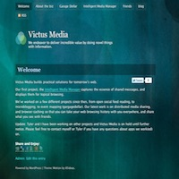
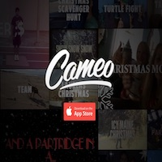
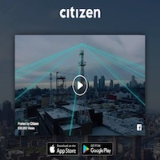
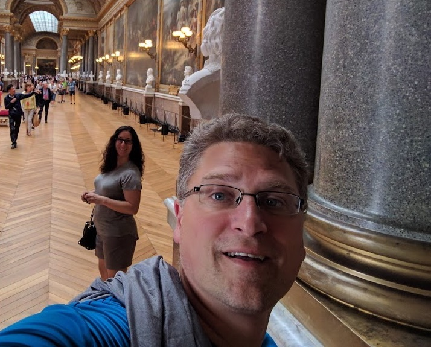

Planning, review, hiring, roadmap, and tech stack.
Professional experience building on a variety of primary datastores and caches: Postgres, MySQL, MongoDB, Memcached, Realm, Redis, Firebase, and Google Cloud Datastore.
Need a custom real time cache capable of supporting geo temporal queries 50x faster than hosted MongoDB? How about horizontally scaling up your real time data architecture? Experience delivering both, and many other custom backend applications.
Delivered when clients required custom high quality video rendering, post processing, or real time video streaming.
Experience deploying to a variety of platforms: AWS, Google Cloud, and Heroku, following security best practices: secure tokens, protection of private user information, and fully searchable logging and metrics.
An opinionated project template for building software with AI coding agents. Drop it into a new project and your agent follows the same
design → PRD → TDD → review
workflow, whether you use Claude Code, Codex, Cursor, Antigravity, or pi.
AGENTS.md as the single source of agent instructions across harnesses
Deep experience delivering solutions
to dozens of clients. You know how everyone says this isn't rocket science
? Well, working with the brilliant team at PRA was rocket science.

Designed and developed a natural language parser tied to Amazon ads, powered by relevant terms from social media. Co-founded my first startup by partnering with an insanely talented developer.

Delivered a custom video rendering/structured scripting engine. After Cameo was acquired by Vimeo, migrated the rendering system to a fresh native mobile client. Worked with the sharpest, coolest and most creative team executing the impossible.

Delivered a complete suite of backend services including a RESTful/realtime API, custom video streaming and geospatial apps. Worked with a phenomenal group dedicated to enhancing public safety.
Founded a consultancy driven to solve critical business challenges with custom backend solutions.
Designed and implemented a dynamic travel planner and recommendation engine with a technical and creative wonder team. Deployed a global street travel time estimator and route renderer.

Founder